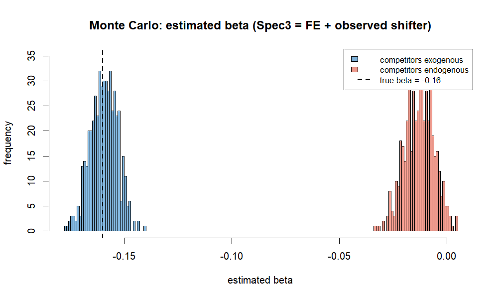

公正取引委員会が審査結果を「読む」だけでなく、審査の手法そのものをRで再現し、 その前提（市場画定）を自分で立てた仮説から検証したプロジェクト。
早稲田大学法学部 中里ゼミ（経済法）個人報告 2026-06-30
中里ゼミ（経済法）の個人報告（テーマ自由）に、イオンによるツルハホールディングス（HD）の株式取得 （企業結合。独占禁止法第10条による株式取得規制。合併ではない）に対する公正取引委員会の審査を選んだ。 公取委は令和7年4月30日、問題解消措置（懸念の残る10商圏で、イオン系又はツルハ系のいずれか1店舗を 第三者に譲渡＋独立監視受託者の選任）を前提に、排除措置命令を行わない旨を通知した事案である。 公取委の審査結果詳細・経済分析報告書という一次資料を「読む」だけでなく、Rで再現・検証することを自ら課した。
店舗位置データをOpenStreetMap（Overpass API）とGoogle Places APIから取得し、Rのsfパッケージで
ツルハ系店舗を基点とする半径2km商圏を構成、商圏内のイオングループ店舗の有無と競争者グループ数を判定した。
公取委の二段スクリーニング（競合商圏→懸念商圏）を、企業結合との因果関係に着目して4区分
（①重複なし＝イオン系不在で因果関係なし／②競争維持＝競争者2グループ以上／③懸念・複占化＝競争者1／
④懸念・独占化＝競争者0）で再現した。重複のない商圏を懸念から明示的に除外することで、
「結合が重複する当事会社を統合して初めて競争を制限しうる」という因果関係をデータ上で表現している。
対象は7県（青森・栃木・茨城・静岡・鳥取・島根・愛媛）に限定した。理由は、Google APIの利用枠の制約に加え、 公取委が懸念を認めた10商圏がすべてこの7県にあるため。懸念商圏が標本内にあることを担保し、 「全国から懸念を発見できるか」ではなく「懸念が所在する県で機械的判定が公取委の懸念をどれだけ捕捉できるか （再現率）」を問う設計にした。
的中したのは2商圏（くすりのレデイ波止浜店＝愛媛・今治、ウェルネス夜見店＝鳥取・米子）。 取りこぼし8の要因は3つに整理できた：
逆に、機械的判定が懸念とした15商圏のうち13商圏は公取委の懸念外（偽陽性）で、多くは公取委が個別審査で 近隣競争者や商圏外圧力を認めて解消した商圏だった。
→ インタラクティブ地図を見る（商圏ごとの区分を色分け表示）
公取委の店舗固定効果パネル回帰（ツルハ各店の粗利益率を、競合グループ数・隣接業態〔スーパー・ ホームセンター・ディスカウントストア〕の店舗数・需要シフター〔人口・高齢化率・地方税等〕・年月ダミーに 回帰。主結果は、2km商圏で競合が1増えると粗利益率が約-0.16%ポイント、500m商圏で約-0.41%ポイント低下）を、 実データが非公開のため、データ生成過程を仮定したモンテカルロ・シミュレーションで再現した。
(1) 固定効果（within変換＝各店舗の時系列平均を差し引く操作）が店舗固有の異質性を除去し、同一店舗内の 変動から競争効果を取り出す仕組み、(2) 観測される需要シフターのみを統制し未観測の交絡（地域の購買力等）が 残ると、競争効果の推定値が真値から強く減衰しゼロに近づくこと、を外生・内生の2つの数値実験で操作的に示した。 これにより、公取委自身が留保した「競合数の内生性ゆえに真の競争効果は報告書の推定値より強い可能性」を 定量的に裏づけた。

「食品を売る仮想的独占者が値上げしても顧客が逃げにくいのはスーパー不在商圏に限られる」という理論から、 スーパー（食品・総合・業務）・コンビニ・ドラッグストア・ディスカウントストアの位置をGoogle Placesで取得し、 業態タイプで非食品を除外。業態別の食品供給力ウェイト（スーパー1.0、コンビニ0.15、ドラッグストア0.2等）で 所有者別の加重食品供給シェアを算出し、イオングループにイオン系スーパー（イオン・マックスバリュ・フジ・ マルナカ・カスミ・マルエツ等）・イオン系ドラッグ・ミニストップを合算。ツルハ基点の2km商圏ごとにHHI・ ΔHHIを計算しセーフハーバーと照合した（ウェイトは値を振った感度分析で頑健性を確認）。
ツルハ基点799商圏のうち、2km内にスーパーが存在しない商圏は3商圏のみ（典型的な商圏は中央値8つの スーパーに囲まれる）。スーパー不在かつ統合がイオン系とツルハを束ねて食品集中を生む商圏は1商圏 （西郷店を基点とする商圏。ミニストップの存在で統合後HHI 1,582・ΔHHI 306となり、水平型セーフハーバー 〔HHI 1,500超2,500以下でΔHHI 250以下〕を形式的に超過〔合算シェア25%〕。ただしイオン系の食品供給が コンビニ〔ミニストップ〕に限られ、店舗数ベースのHHIは売上ベースの代理にすぎず、商圏外のスーパー・ ネット通販も圧力となるため、実質的弊害は乏しい）。
セーフハーバー超過54商圏も、その53はスーパーを擁し（中央値7）、超過の構造はイオンがスーパーで既に持つ 食品シェア（中央値29%）にツルハの小さな増分（中央値8%）が乗っただけで、競合スーパーが多数残り競争は 維持されていた。
聞き手（ゼミ生）が法学部生であったため、経済分析（固定効果・内生性など専門的な統計）の説明で聞き手を 置いていってしまった感覚があり、噛み砕いた説明ができなかった点は自己反省している。 中里先生（経済法）からは、経済分析は先生の専門外であるにもかかわらず、総合的に非常に良い評価を受けた。 「ゼミ内で終わらせるのはもったいない」として、第3回 全国法学部経済法研究フォーラム （2026年10月3日、東京都立大学晴海キャンパス／主催：全国法学部経済法研究大会実行委員会、 共催：公正取引委員会競争政策研究センター／ポスター発表・A2 1枚＋説明資料4,000〜6,000字目安／ 応募締切2026年9月1日）への応募を勧められた。
よって数値は予備的・例示的なものである。
一次資料: 公正取引委員会「イオン株式会社及び株式会社ツルハホールディングスの統合に関する審査結果について」 （令和7年4月30日）・同 審査結果詳細・同 経済分析報告書／企業結合ガイドライン／ 平成27年度における主要な企業結合事例 事例9（ファミリーマート・ユニーグループ・ホールディングス）／ 菅久修一『独占禁止法 第5版』（商事法務、2024）／ 川濵昇・武田邦宣・和久井理子『経済法判例・審決百選［第3版］』（有斐閣、2024）／ イオン株式会社「2026年度～2030年度 グループ中期経営計画」